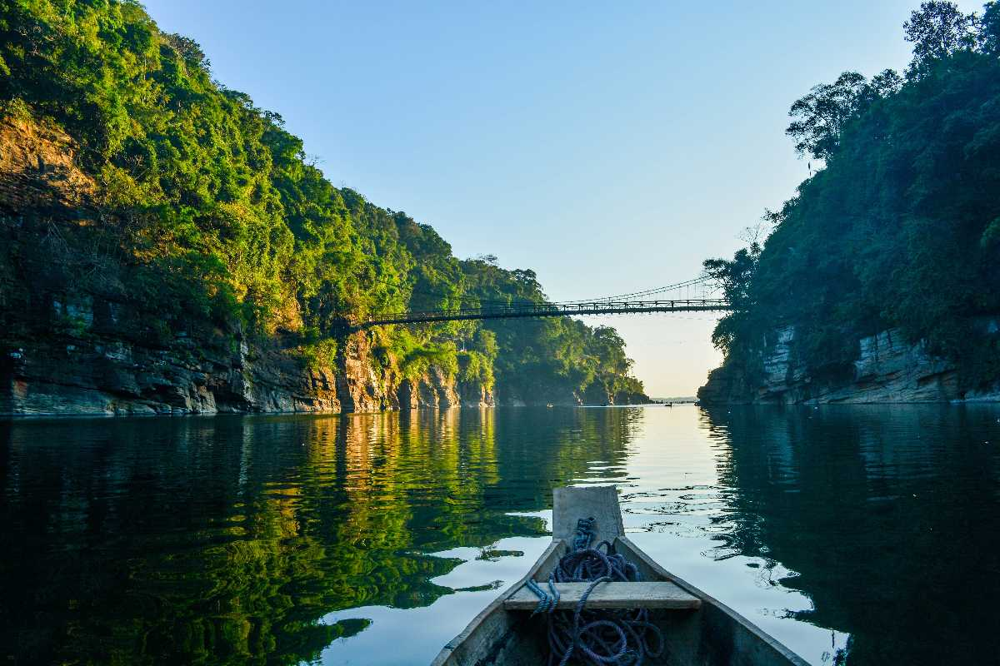

Mawlynnong is famous as "Asia's Cleanest Village" and is a model of community-based ecotourism. This picturesque village in the East Khasi Hills showcases the natural beauty and cultural heritage of Meghalaya.
The village is remarkably clean, with bamboo dustbins at every corner and a strong community commitment to cleanliness. The lush greenery, living root bridges, and views of Bangladesh plains make it a must-visit destination.
- Living Root Bridge - a natural bridge made from tree roots
- Sky View - a bamboo tower offering panoramic views of Bangladesh
- Balancing Rock - a large boulder balanced on a smaller rock
- Village walks through spotlessly clean paths
- Local Khasi culture and hospitality
October to May is ideal. The monsoon season (June-September) brings heavy rainfall, though the landscape becomes even more lush and green.
Mawlynnong is about 90 km from Shillong. You can hire a taxi from Shillong or take a shared taxi. The journey takes about 2-3 hours through scenic roads. The nearest airport is Shillong Airport, though most visitors fly into Guwahati.